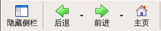
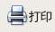

使用帮助窗口
译者：TeliuTe 来源：基础教程网
这一章讲述了如何使用帮助窗口(包括这个窗口和左侧栏的整个窗口)。
查找您想要的主题
当您正在查看这个帮助窗口时，可以点击左边栏标签，用不同的方法来查看内容:
- 目录 显示主题列表。
单击一个主题然后阅读它，双击查看它的子标题。
- 搜索 允许您搜索帮助文件。
输入一个词或短语然后按回车键搜索相应的主题，然后点击搜索到的主题阅读。
如果搜索没有返回任何主题，尝试减少词语或者换一个词语来搜索。
- 索引 按字母顺序列出主题。
点击索引中的主题然后阅读。
- 词典按字母顺序列出名词解释
点击一个词语，然后查阅它的解释。
要查看主题的更多相关信息，在帮助窗口里点击链接，您将进入另一个网页。
浏览足迹
要返回您在帮助中查看过的主题，点击帮助窗口左上角的按钮:

- 点击显示/隐藏按钮，可以显示或隐藏左边的侧栏。
- 点击后退按钮可以回到之前浏览的页面。就像在 KompoZer 主窗口使用后退按钮。
- 点击前进按钮可以跳到之后浏览的页面。就像在 KompoZer 主窗口使用前进按钮。
- 点击主页按钮可以回到帮助和支持中心，包括链接到支持选项和网页资源。
另外，可以按如下操作打印此教程:
- 要打印当前帮助窗口显示的整个页面，点击右上角的打印按钮:

- 要打印部分页面，首先要选中打印的区域，然后点击打印按钮。
搜索小提示
如果您不太清楚要搜索什么，这里给您一些小的帮助:
- 确定搜索的内容与 KompoZer 有关，这不是在网络里搜索。
- 尝试放宽搜索范围 - 不必指定太细致，搜索项可能是另外一个词语。
- 避免太宽的搜索词语: 比如像 "KompoZer"
和 "&vendorShortName;" 可能返回帮助里的所有页面。
[返回目录] [下一页]
TeliuTe, 2009年6月21日
© 2003-2009 Nvu, KompoZer 帮助文档项目贡献者，版权所有。